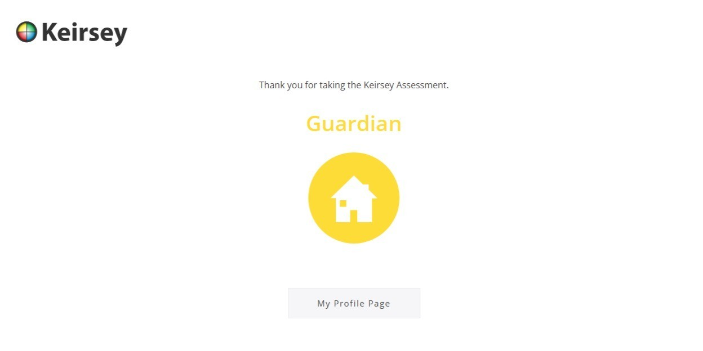
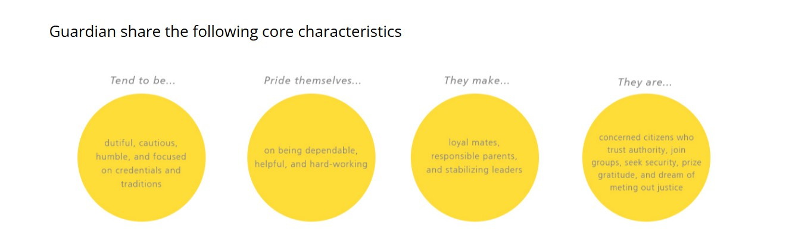

Traits and Hobbies
My strongest personality trait is curiosity, which drives me to explore new technologies and push my academic boundaries. It helps me excel in school because I enjoy problem-solving and learning by doing, especially in programming and systems design.
Hero & Quote
“Success is not owned, it is leased. And rent is due every day.” - J.J. Watt
J.J. Watt inspires me because of his relentless work ethic and commitment to excellence. His quote reminds me that consistent effort is required to achieve and maintain success, motivating me to give my best every day.
Personality Test Results

Reflection
I took the Keirsey Temperament Sorter, and it described me as a "Guardian". This personality type values responsibility, stability, and helping others, which aligns with my preference for structure and reliability. I believe the test is fairly accurate for me because I tend to be dependable, organized, and supportive in my work and studies.